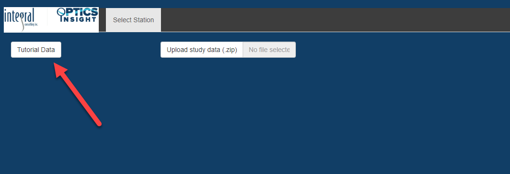
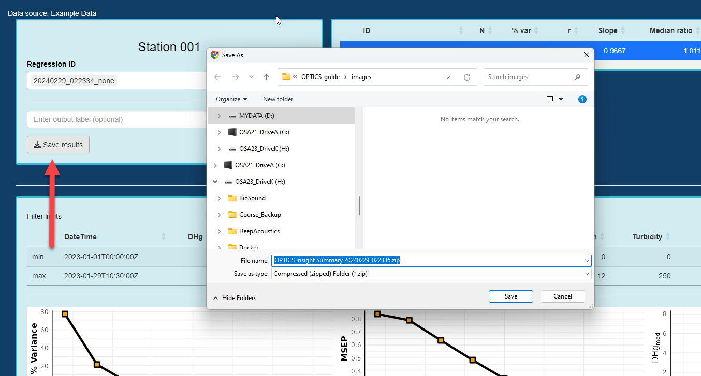

Guided Tutorial
In this tutorial, you will step through the process of evaluating and analyzing a test dataset available within OPTICS Insight’s example data folder. This takes you from import to output using fictitious data that is arbitrarily assigned to a location. For additional details relating to the steps in this tutorial, visit the documentation options in the menu.
Data Loading & Visualization
Navigate to OPTICS Insight.
Load Data: The tool opens to a dark blue screen with two options, “Tutorial Data” and “Upload study data (zip).” Select the “Tutorial Data” option, and a map should instantly appear in the space below the data selection buttons. If you were using OPTICS for your own data, you would instead upload a zipped folder with prepared csvs for each station.

Next, you will need to expand the stations at one of the sites where multiple stations have the same latitude/longitude. Click on the green circle with the “3” (NOTE: if your screen is fully expanded, you may just see a “2” with two adjacent stations, as is the case in step #4)
The expanded stations will make “Station 005” available. Select this station. You will also see that the “3” has changed to a “2” and if you were to click on that “2” you would see that two additional station options become available. We will use “Station 5” in the example.

NOTE: Data were not collected in this region, and are generated for demonstration purposes only!
Select Data Inputs for Analysis
The next steps take you through data visualization. This data consists of all data that was made available in the provided folder, and in this instance, all environmental and contaminant variables that are contributing to the demonstration. For additional information regarding file format and required csv structure, visit the “Getting Started” section. When you click on the “Station 005” above, the “Input” tab will display with the following details:
A) Station location map for reference
B) List of laboratory (contaminant) and sensor (environmental) variables available for this station. You can select one sensor variable at a time to delete it from the list. If you want to add it back into the list, place your cursor after the last variable and move the cursor using the arrows on the keyboard to a place in between two variables where you want to add it, then start typing the variable name and select from the drop-down menu. A global date-time sliding scale controls the temporal query for all values. The number of bins and data transformation controlling regression analysis is in this section as well. For additional details on this section, visit the “Reviewing Data” section from the menu.
C) Time-series and histogram plots of the selected laboratory variable along with sliding selector to query specific values. The laboratory variable displayed is the one selected in section “B.”
D) Plot of all sensor variables in the order they are displayed in the box under section B. You can move their location to change the order of these time-series/histogram plots. The range of values for each of the variables can be independently queried and is carried forward to regression analysis.

Perform the following steps for data selection:
On the left-hand “Station 005,” highlight “Turbidity” so it turns dark blue and delete this variable from the list (by simply hitting the delete button). Then select “Phycocyanin” and “pH” individually and delete each of those as well. Move the beginning date slider to “2023-02-05,” and your screen should look like this:
Now, add in one of the variables you deleted (assuming you forgot you required it!) by clicking in the “Sensor Variables” box to reveal the blinking cursor line. Move your cursor to the left (using the arrows on the keyboard, not with your mouse) so it is in between “Temperature” and “Salinity” and a drop-down menu will appear with the options of variables you can add. Select “pH” and it should then appear in the space between “Temperature” and “Salinity.” NOTE: you cannot drag and reorder variables, but instead have to delete one, then proceed with moving your cursor using the keyboard arrows to the place where you want to add it.

In the plot section, review the laboratory and sensor variables to get a sense of the data. Under “Depth” move the initial selection slider to a value of “2.3001” to select only those values that occur at depths greater than that value (the slider should naturally land on this value when you scroll it to the right). You will notice the pulsing bar at the top will indicate it is updating the other datasets to include these query criteria as well. When the pulsing stops, review the datasets to see how the values of each of the variables have changed.
You will notice that if you query a variable using a selection slider, that change will be applied to all variables as associated data points will be eliminated from subsequent analysis. For instance, before shifting the depth, there was an “N” of 12,124 for all sensor variables. After reducing the depth dataset, the “N” value is reduced to 8,317. The same will apply to all sensor variable datasets that are restricted in range, and the laboratory variable will be restricted to those values associated with the available sensor variable data.
Perform Regression Analyses
The “Run regression” button selected from the “Input” tab performs the regression analysis with the set of sensor variables and filters set by the user. Multiple regressions can be run and compared by navigating back to the “Input” tab, modifying the inputs by transforming the data or further filtering and selecting the “Run regression” button again. Each regression analysis is labeled with the date, time and transformation state (e.g., “none,” “log”) appended to the filename. Results from all analyses are listed in the top right section of the “Regression” tab, allowing for each comparison between results. Selecting an analysis run from the “Regression ID” field loads the figures related to that analysis. An analysis run can be deleted by highlighting the name in the “Regression ID” field and hitting the “delete” tab.
Navigate back to the side panel on the left one more time, and scroll down to the bottom section of the panel under “Station 005.” You will notice there is a “Number of bins” value, a “Data transformation” value, and a “Run regression” button. For our first run, keep these defaults and select the “Run regression” button.
The “Regression” tab will open and at the top, you will have information on the “Regression ID” (which is the computer date, time, and data transformation you selected). If you had completed your analysis, you would then select the “Save results” button. This will be explained in an additional step below. To the right of the Regression ID and “Save” information are the results of your regression analysis. NOTE: For additional information regarding the output values, navigate to the “Regression Analyses” section of the menu.
In the lower portion of this tab is a summary of the laboratory and sensor variables, as well as the figures related to the regression analysis. These figures are further described in the “Regression Analyses” section.
After running a regression, you can return to the “Input” tab to run any number of regressions by re-filtering the data or selecting a data transformation. Navigate to the “Input” tab. NOTE: if you navigate back to the “Select Station” tab, your analyses will be lost, so it is highly recommended you save your results if you decide to move to a separate station for analysis.
In this next regression run, select the “log” transformation in the “Data transformation” drop-down menu. Retain all other settings/filters for the dataset. After selecting this transformation, select the “Run regression” button again.
- On the “Regression” tab, there will now be two separate regression datasets provided, and you can see each of them listed in the “Regression ID” section (with the date/time of the analysis and an extension of the data transformation selection; A). The regression results (B) will indicate the results of each regression and by selecting one of these regression analyses, you will find the plots in the lower section update to reflect your selection.
Save and Review Results
After reviewing the data, select the “Save results” button. This will save all results of your analysis in zipped file labeled with “OPTICS Insight Summary…” along with the date and time you generated the results. Identify a location to save your results.

Results are saved to a zipped folder. Extract the results to a folder of your choice (example from un-zipping on a PC machine below, results for Mac machine will look different).
Results consist of the following details and are labeled by station and date and time associated with the analysis run:
A) An HTML summary of all analyses, wherein you can save figures
B) Data related to your filtering limits for all variables, for each of the regression analyses you ran
C) Statistical results of all models, and predicted values of all variables for all regression analyses you ran
If you would like to save figures from the analysis, open the “.html” file from the saved results.
A) This section allows you to select from “Summary statistics” or “By regression” (which will open to indicate all regressions you can select from).
B) For all figures, you can right click and “Save image as…” in order to save specific regression figures to .png or .jpg format for presentations or other media.
Now that you have a handle on how to upload data, review and filter variables, and run regression analyses, enjoy further exploring OPTICS Insight!